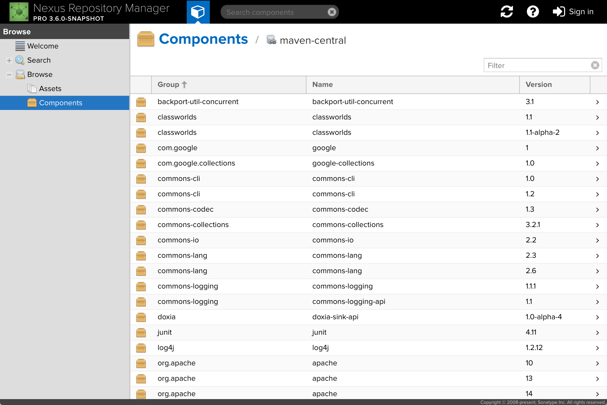
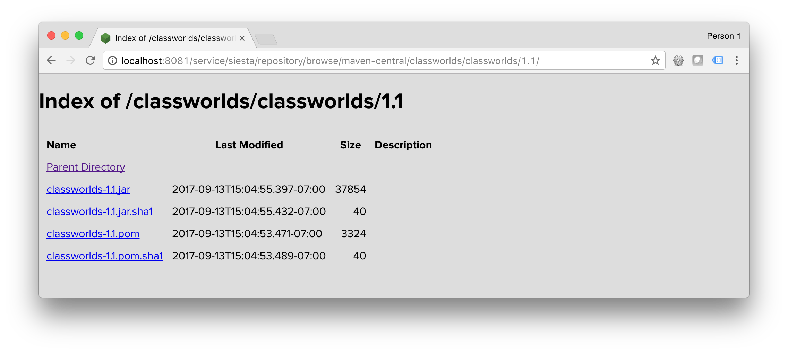

Tree Browsing
Back to home pageDevelopers care a lot about software modularity. The more code you can write once and reuse in other projects, the better. Nexus Repository is a tool intended to help developers store and consume these reusable components.
Many popular languages and tools have public repositories that serve as the authoritative store for their components. Maven has Maven Central , Docker has Docker Hub , Node.js has npmjs.com .
A common feature of these public repositories is the ability to browse for components that you can use in your own projects. Since Nexus Repository not only stores the components you write, but also proxies these public repositories, it follows that you might want to browse the components in your Nexus Repository as well.
The trick is that mature formats like Maven have tens or hundreds of thousands of components to choose from, making it difficult to find what you need. To make this easier, formats have adapted naming conventions. For example, Maven components follow a naming convention known as GAV (Group, Artifact, Version). You can visualize this as a tree, with versions sitting under artifacts, and artifacts sitting under groups. It turns out that most formats, even if they’re not as structured as Maven, benefit from similar conventions.
When Nexus Repository 3 was first released, we decided to make browsing a very flat experience. Unfortunately, this resulted in people not being able to find what they were looking for. The interface simply didn’t map to their mental model of how formats work. The following is an example of this flat browse experience for a Maven repository.
To solve this, we decided to represent the hierarchy in each format as a tree. Since different formats have slightly different hierarchies, we handled the display of each format in the way that would make most sense to a native user of that format. The following is an example of this hierarchical browse experience for a Maven repository.

As you can see, the tree on the left is a clear representation of the GAV naming convention, with group classworlds at the top, artifact classworlds below it, and the different versions of the artifact (1.1-alpha-2 and 1.1) below that. Maven components can contain multiple assets, and those are represented in the tree as well.
To come to this solution, we conducted two rounds of interviews with Nexus Repository users. Beyond the simple mechanics of the tree view as mentioned above, we learned a few additional things which we incorporated into the final feature.
First, we learned that once people navigate to a specific asset or component in the tree, they often want to share it with their coworkers. To facilitate this, we made it possible to bookmark individual nodes in the tree.
Second, we learned that many people use the tree to get the most recent version of a component. These people don’t necessarily need the full set of functionality we built: a simpler, streamlined version would do just as well. To address this, we delivered an HTML index view which lets you browse any repository as a series of static HTML pages.
Third, we learned that performance is the most critical part of any browse experience. Because repositories can have millions of assets and complex security rules determining who can view what, we needed a browse experience that was performant in these extreme cases. This turned out to be the hardest part of the entire feature. In the end, we made it capable of displaying a tree containing three million assets in three seconds on standard laptop hardware.
The biggest thing I learned from the design and development of this feature is that it’s very, very hard to deliver a compelling experience that’s not merely a toy. When you’re a resource-strapped startup building tools for Fortune 500 companies, very often it’s better to deliver a UI that feels simplistic but is usable and performant.
We have plans to iterate on this initial feature, but we’re very proud of the result.
Back to home page